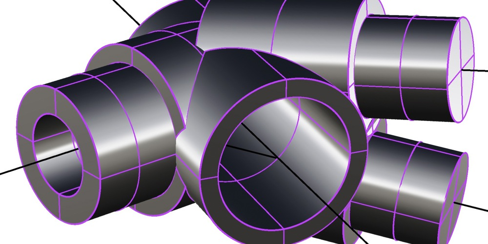
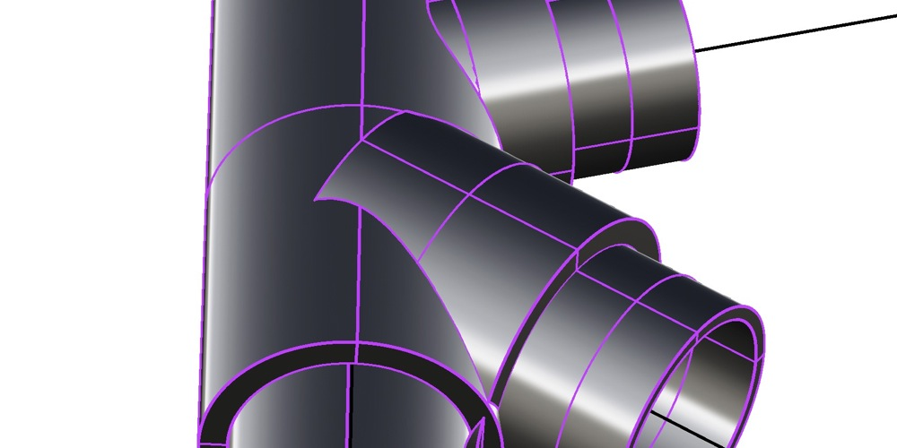
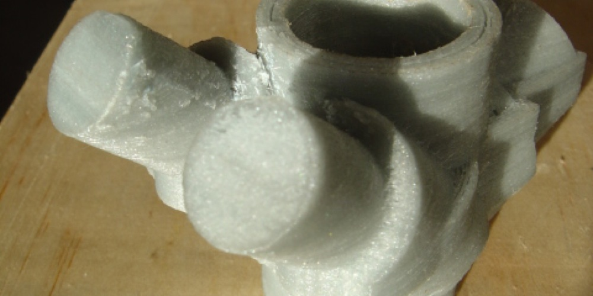

Bio bike
I came across a book called Paterek's frame builders manual. It was full of equations concerning the relationship between body measurements and bicycle frame sizing. I realised I could represent these equations in Grasshopper3d for Rhino. The end result would be a huge algorithm into which anyone could enter their body measurements and riding requirements and a 3d model of the perfect bicycle frame for them would be generated in Rhinoceros.

This worked great, and was really nice. I could have stopped there, and simply copied the measurements from the computer and welded a conventional steel frame. But seeing as I just finished building a 3d printer I wondered if I could extend my algorithm to also generate components which could be 3d printed and then into which pre cut lengths of tube could be inserted and glued to form the frame.
Essentially I needed to generate a number of custom lug models which I would print. I'd heard about the impressive characteristics of bamboo as a bicycle frame material and decided I wanted to use this for the tubes.
I visited a specialist in bamboo called Jack Everett to ask his advice on the matter, and he kindly told me everything I needed to know and gave me enough bamboo for my first prototype.

Sadly while in storage at a warehouse I was living in in London, someone took my collection of special bamboo and cut it all up into little pieces to decorate a metal chest they where commissioned to build for a Gin promotion event. Since then this project has been on hold.
